Footwear concept · Summer 2025
Spider Clog
Harnessing my unique knowledge in footwear to design and flesh out a shoe using AI and 3D modeling software.
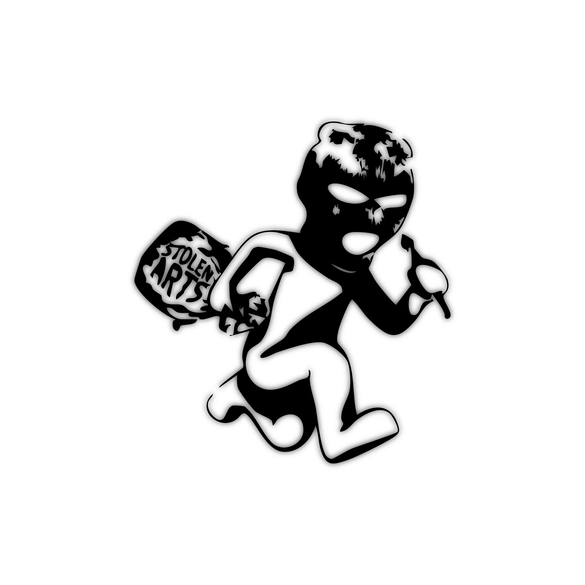
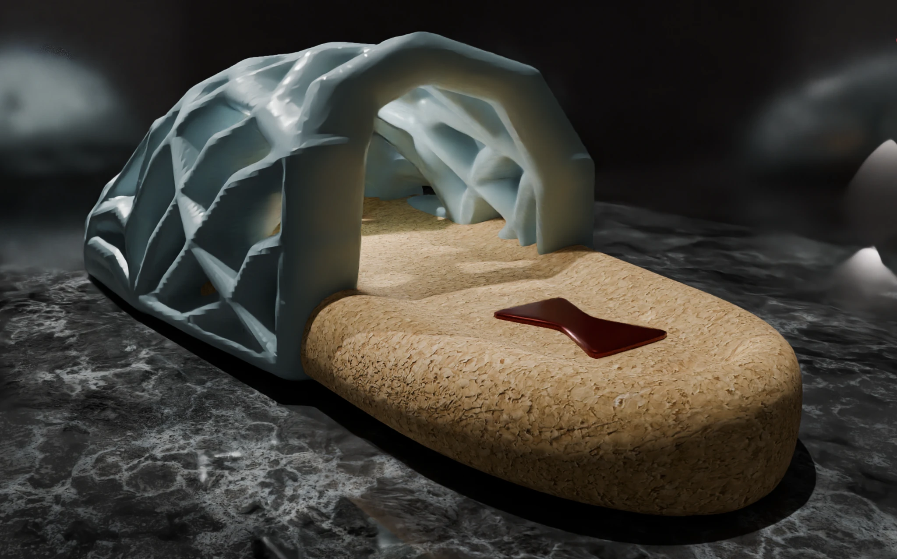
3D modeling
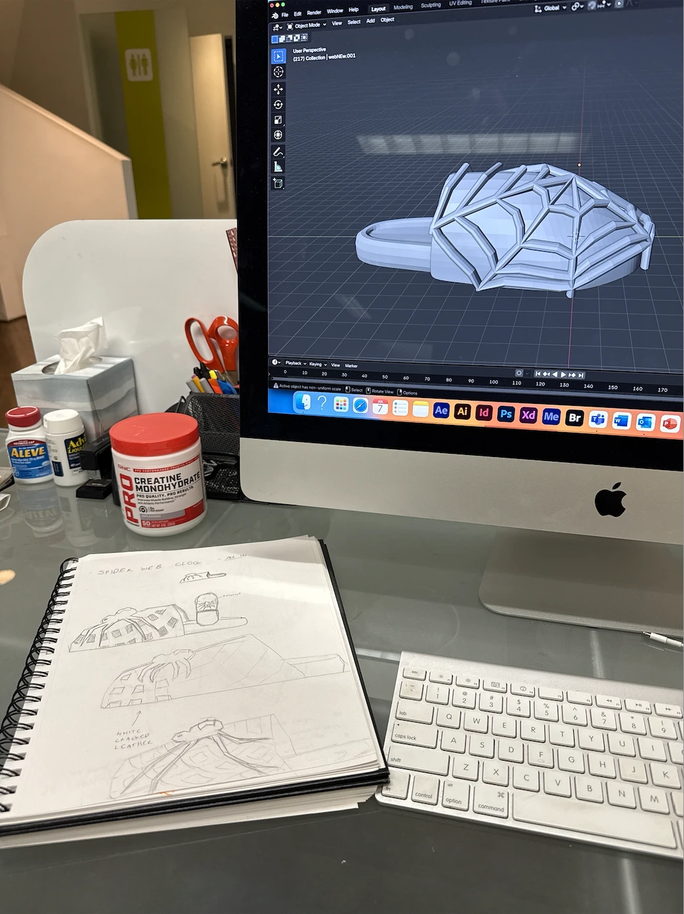
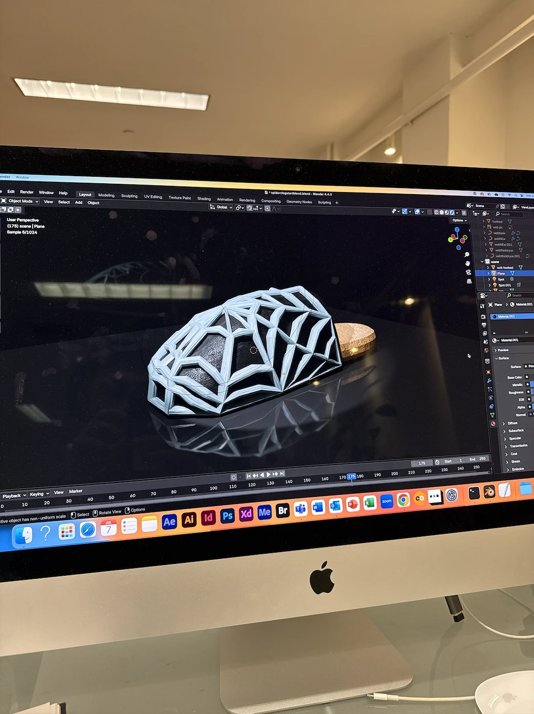

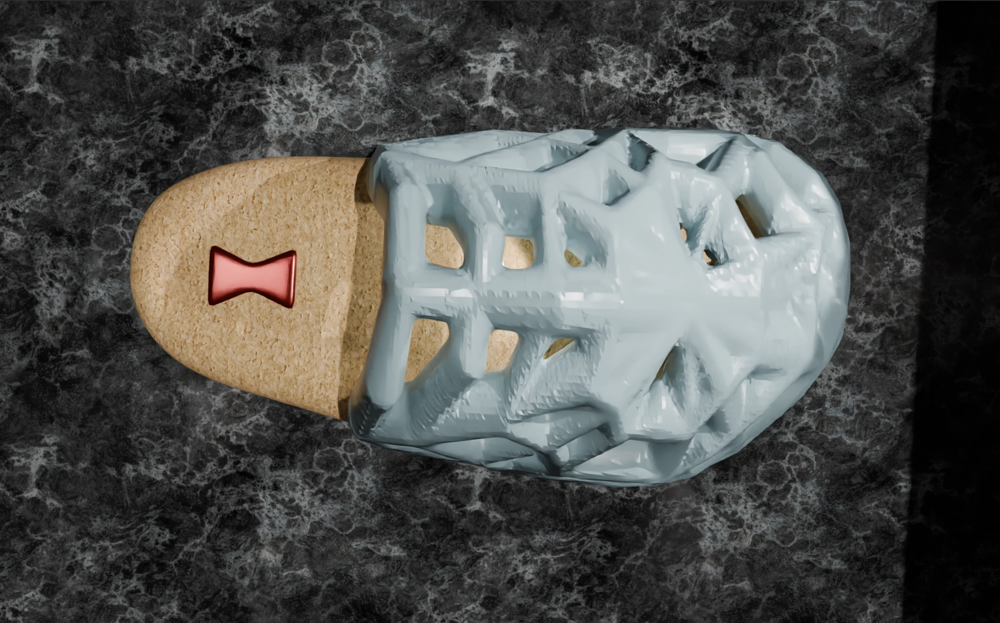
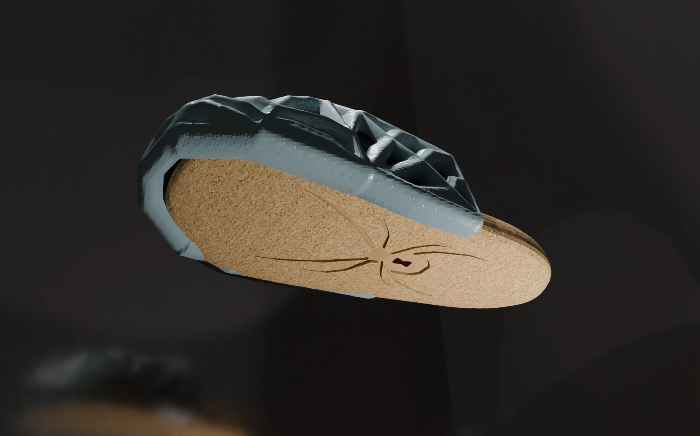
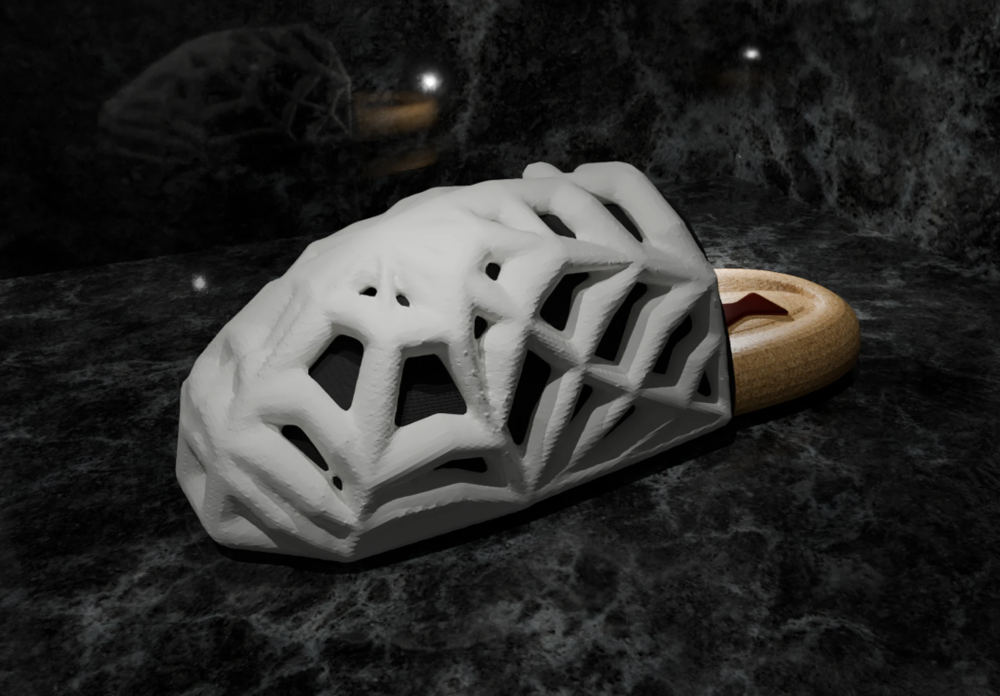
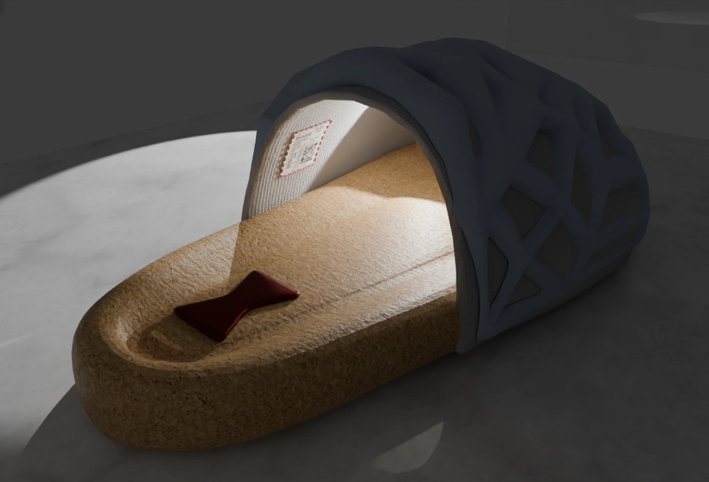
Being one of my first full-scale Blender projects, I learned the best ways to achieve my form through constant iteration. I also utilized Blender’s rendering suite, though I usually do this step in KeyShot.
Process
Trend analysis
Working for a streetwear brand, staying ahead of trends is crucial. When looking into inspiration for this shoe, I looked at brands at the top of footwear right now. Whether that’s Justin Bieber’s SKYLRK, San Diego’s ERL or even the everlasting superiority of Birkenstock, I sought to recognize sales targets.
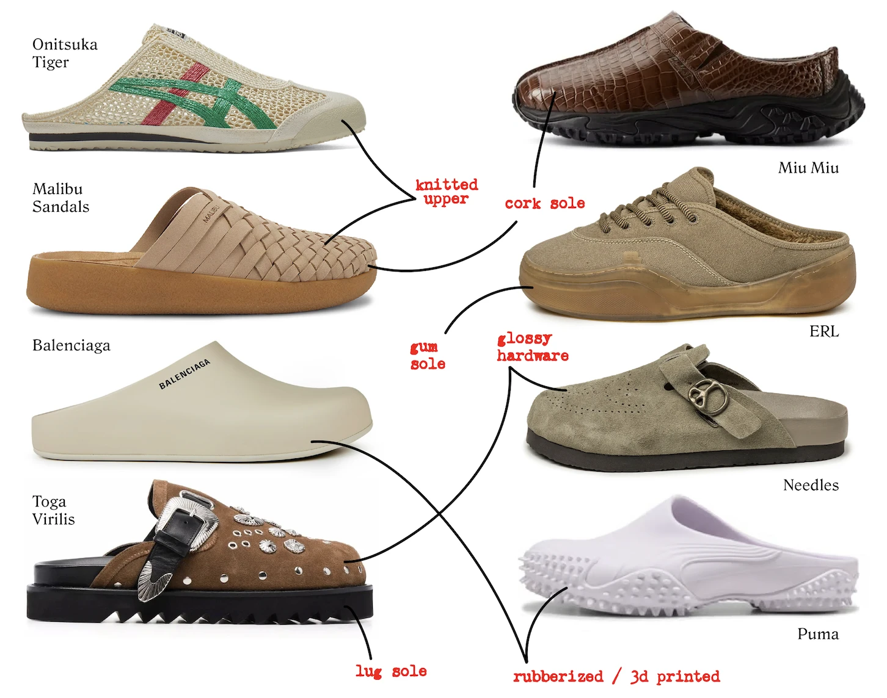
Looking at all these shoes I had come across in stores and in the streets of New York, I fell in love with the exposed back, or clog, style. I wanted to incorporate this into a mule for Stolen Arts, and with 3D printing and animal print trending, I saw spider webs as a major point of inspiration.
Sketches / AI modeling
When prepping this shoe, I started with some basic sketches. I wanted a rubberized upper with a cork sole, and I really wanted to capture the spider web. In doing this, I also decided to utilize an AI modeling platform, Vizcom, to visualize the shoe before I modeled it in Blender.
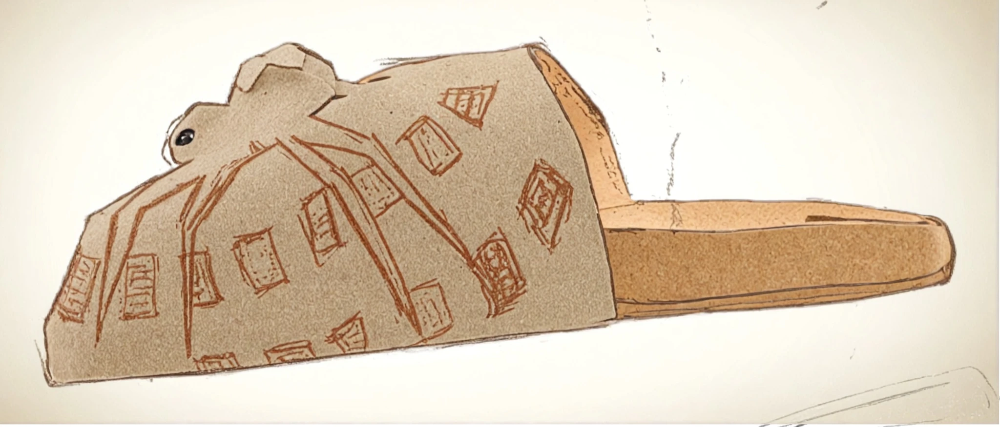
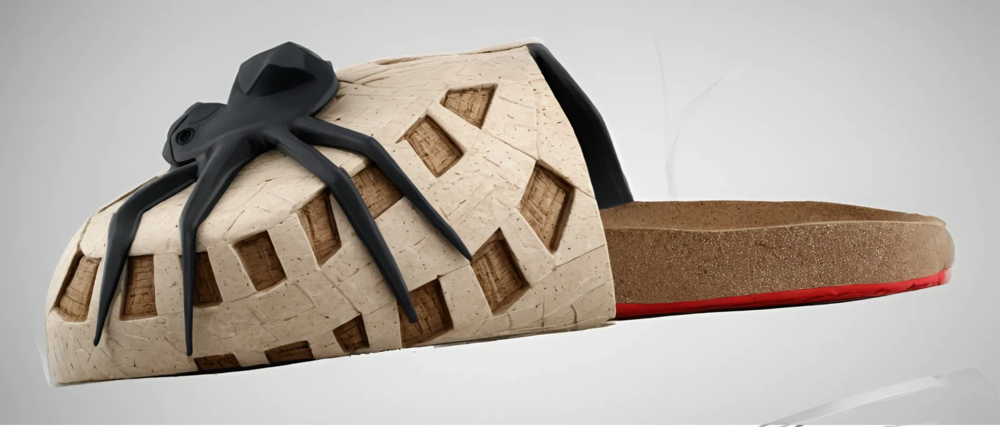
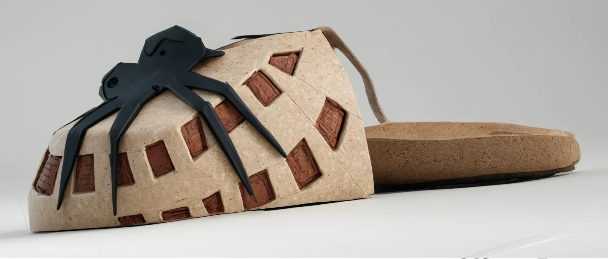
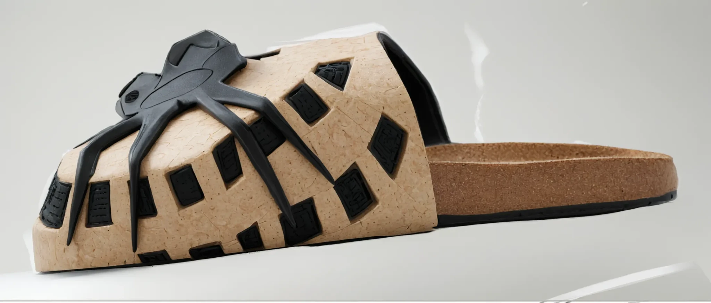
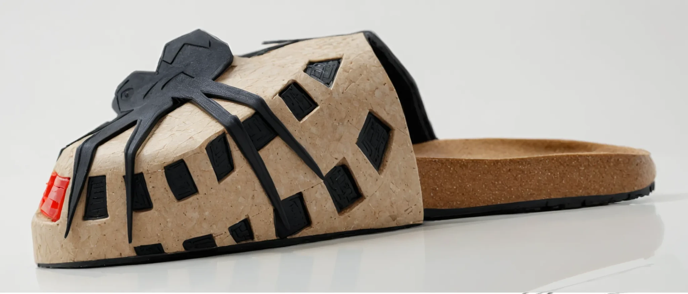
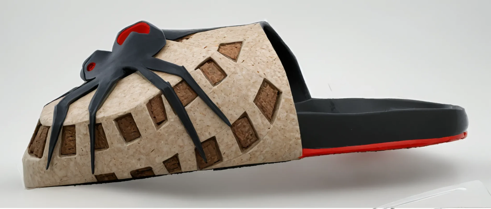